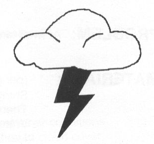

Introduction
SchoolNet 101 consists of twenty lessons related to meteorology. Each lesson is designed to be hands-on and easy to understand. The activities should take approximately five minutes to complete and can be inserted into the school day as needed. The lessons can be used independently or as an extension to a meteorology unit.
Each day a weather lesson is presented in class. Then the students will be given a related question. In the background information section of each unit, the answer we are looking for from the student is in bold type face.
Teachers are encouraged to give credit for the classwork completed during this unit. The lessons do help develop science process skills. A grade will help students realize the importance of the activities and ensure their completion. Certificates have been included as positive reinforcement.
We hope this will be a successful unit for all involved.
Goals
To make weather (science) fun and interesting for kids.
To give the kids a basic understanding of how weather works.
To give children the ability and know-how to locate and utilize weather information on the Internet.
Table of Contents and Lesson Plans
|
Week
1 DAY 2 LESSON 2 - Measuring the Atmosphere ............ 3 DAY 3 LESSON 3 - The Water Cycle ..................... 5 DAY 4 LESSON 4 - Types of Clouds ..................... 7 DAY 5 LESSON 5 - Wind ................................ 9 |
Week 3 DAY 1 LESSON 11 - Barometric Pressure ...... 19 DAY 2 LESSON 12 - Pressure Systems ......... 21 DAY 3 LESSON 13 - Dew Point ................ 22 DAY 4 LESSON 14 - Thunderstorms ............ 23 DAY 5 LESSON 15 - But You Won't Land in Oz . 24 |
|
Week 2 DAY 1 LESSON 6 - The Sun's Effects on the Earth ...... 10 DAY 2 LESSON 7 - The Tilted Earth .................... 11 DAY 3 LESSON 8 - The Earth's Rotation and Revolution . 12 DAY 4 LESSON 9 - Temperature ......................... 15 DAY 5 LESSON 10 - Relative Humidity ................... 17 |
Week 4 DAY 1 LESSON 16 - Severe Weather Safety .... 25 DAY 2 LESSON 17 - Weather Technology ....... 26 DAY 3 LESSON 18 - The TV Weather Map ....... 27 DAY 4 LESSON 19 - Forecasting the Weather .. 32 DAY 5 LESSON 20 - Old Weather Sayings ...... 34 Bibliography ............................... 35 |
Materials List
LESSON 1 candle, quart-sized, wide-mouth glass jar, 2" deep glass pan, matches, water
LESSON 2 data sheet
LESSON 3 tea kettle, water, small saucepan, hot plate, ice cubes, the Water Cycle transparency
LESSON 4 clear bottle with cork, glass tube, water, rubbing alcohol, crushed chalk, liquid soap
LESSON 5 straight pins, straws, compasses, construction paper, scissors, pencil with eraser
LESSON 6 candle, matches, paper spiral, string
LESSON 7 chalk, flashlight, yard stick
LESSON 8 flashlight, globe, transparent tape, paper
LESSON 9 data sheet, regional map
LESSON 10 thermometers, wide cotton shoelace, large piece cardboard, 3 rubber bands, scissors, water
LESSON 11 quart sized bottle w/ narrow neck, paper towel, matches, hard-boiled egg w/ shell removed
LESSON 13 shiny metal cans, thermometers, stirring rods, ice, water
LESSON 14 paper bags
LESSON 15 paper, clear glass jar, water, about 50 one cm square pieces of aluminum foil
LESSON 16 Weather Terms & Safety Tips brochure, tornado video
LESSON 18 student weather maps, transparency of weather maps, transparency of Warm/Cold Fronts page
LESSON 19 How to Make a Forecast/Halos Around the Moon page, Cloud Chart
LESSON 20 Certificate of Completion
LESSON 1 - Composition of the Atmosphere
PROBLEM:
What gases make up our air?
MATERIALS:
Quart sized wide mouthed glass jar
Glass pan, 2" deep
Matches
Candle
Water, to fill dish half-way
PROCEDURE:
Ask, "What gases make up our air?" Allow speculation, but do not give correct answers at this time.
Ask, "What gas would a candle need to burn?" (oxygen)
Light candle. Set candle on melted drippings in center of pan.
Fill the glass pan half full of water.
Place wide-mouth jar over lighted candle. Observe.
RESULTS: Candle will cease burning momentarily. Water will rise in the jar.
CONCLUSION: The candle flame has taken the oxygen from the air in the jar. The pressure of the air left inside the jar is less than that of the air outside. The water rises in the jar approximately one-fifth of the way. Therefore, we can conclude that air is made up of approximately one-fifth oxygen.
QUESTION: What gases make up the rest of the air?
BACKGROUND INFORMATION:
The composition of the air is as follows:
Nitrogen - 78%
Oxygen - 21%
Argon - 0.93%
Carbon Dioxide - 0.03%
Neon,Xenon, Helium - trace amount
LESSON 2 – Measuring The Atmosphere
PROBLEM: Since air is invisible, how do we "measure" the atmosphere?
MATERIALS: SchoolNet8 computer (or Internet connection to view SchoolNet8 measurements through links at http://www.theiowachannel.com , under Weather)
QUESTIONS: What time of day is relative humidity normally highest and lowest?
BACKGROUND: Weather sensors on the SchoolNet8 sites collect data and distribute the information over the Internet. By watching the numbers, we can see how changes in one weather variable changes others. For instance, when temperatures rises, relative humidity usually drops (because warm air can hold more water vapor). Winds change temperature by pushing colder or warmer air into the area. Pressure falls as foul weather approaches and rises when fair weather dominates. Rainfall increases humidity and cools temperatures.
Dew point is a "true" measure of the amount of water in the atmosphere, because it is not dependent on temperature. When the temperature cools to its dew point, the air is saturated, and fog is usually the result. During the summertime, we say the air starts to feel "tropical" when the dew point is in the 60's, and feels uncomfortably humid when the dew point is in the 70's. Solar radiation is displayed in watts per square meter squared. The higher the number, the more incoming sunshine is being received by the sensor. The number will be lower on cloudy days, and the value will be zero at night. Daily rainfall total automatically resets at midnight local time.
PROCEDURE: Collect temperature and other data from your local SchoolNet8 sensors. Compare the current conditions with the daily minimums and maximums (lows and highs) to gain perspective on how conditions change during the day.
CONCLUSIONS: On "normal" weather days (when no major changes in air masses or precipitation occur), the temperatures are coldest in the morning just after the sunrise because heat has escaped from the earth's surface overnight. Daily highs (temperature maximums) usually occur late afternoon. Even on those muggy days of summer, relative humidity is usually the highest in the morning (because colder air can hold less water vapor).
USE WHAT YOU LEARNED: Any of the meteorological values on the SchoolNet8 can easily be plotted on graph paper by students. This is a good exercise in using numbers, and will help them visualize weather trends over time.
DATA SHEET
|
Date |
|
|
|
|
|
|
|
Time |
|
|
|
|
|
|
|
Temperature |
|
|
|
|
|
|
|
Humidity |
|
|
|
|
|
|
|
Wind |
|
|
|
|
|
|
|
Pressure |
|
|
|
|
|
|
|
Solar |
|
|
|
|
|
|
|
Dew Point |
|
|
|
|
|
|
|
Date |
|
|
|
|
|
|
|
Time |
|
|
|
|
|
|
|
Temperature |
|
|
|
|
|
|
|
Humidity |
|
|
|
|
|
|
|
Wind |
|
|
|
|
|
|
|
Pressure |
|
|
|
|
|
|
|
Solar |
|
|
|
|
|
|
|
Dew Point |
|
|
|
|
|
|
|
Date |
|
|
|
|
|
|
|
Time |
|
|
|
|
|
|
|
Temperature |
|
|
|
|
|
|
|
Humidity |
|
|
|
|
|
|
|
Wind |
|
|
|
|
|
|
|
Pressure |
|
|
|
|
|
|
|
Solar |
|
|
|
|
|
|
|
Dew Point |
|
|
|
|
|
|
LESSON 3 - The Water Cycle
PROBLEM: What makes the rain fall?
MATERIALS: Tea Kettle
3 cups of water
Small sauce pan
Hot plate
Ice cubes
Transparency of "The Water Cycle"
PROCEDURE:
Bring 2 cups water in tea kettle to boiling point so steam is rising from spout.
Put 1 cup water and ice cubes into pan.
When steam is rising from kettle, hold pan of water over spout so steam from spout will strike bottom and side of pan.
Ask students to observe and describe what is happening.
Relate demonstration to the water cycle using transparency.
RESULTS: Steam from the kettle, upon striking the cold pan, is cooled and condenses into droplets of water on the outside of the pan. These droplets collect and fall from the pan like rain falling from a cloud.
CONCLUSION: Water, when heated, rises in the form of vapor into the air. Upon striking cool air, the vapor condenses into tiny droplets of water or moisture. These collect upon particles of dirt in the air to form clouds. When condensed further, this moisture falls from the clouds in the form of rain.
QUESTION: What are 5 common types of precipitation or condensed moisture vapor?
BACKGROUND INFORMATION: Hail forms when tiny ice crystals are buffeted around the updrafts which cause the crystals to grow in size, and eventually fall as hail. Sleet begins as rain then falls into a layer of freezing temperatures and solidifies before it hits the ground. Snow occurs when particles of water vapor freeze in the upper air and fall to the earth as soft, white, crystalline flakes. Freezing rain falls as a liquid, but freezes as soon as it lands. Fog is like a cloud on the ground. During the early morning hours, water vapor condenses around small particles of matter in the air close to the ground, forming fog.
LESSON 4 - Types of Clouds
PROBLEM: How do clouds form?
MATERIALS: Clear bottle with a cork to seal it.
Glass tube
Liquid soap
Water
Rubbing alcohol
Crushed chalk
PROCEDURE:
Bore a hole in the cork.
Rub the glass tube with soap, and push the tube through the hole in the cork.
Pour a mixture of alcohol and water into the bottle, wetting all sides of the bottle.
Put a few pinches of crushed chalk into the bottle and cork it, making sure that it is tightly sealed.
Blow through the tube until the chalk dust is flying around, and then suck out very hard.
RESULTS: Air inside the bottle will expand, and a cloud will be formed.
CONCLUSION: In the atmosphere, warm moist air rises and becomes cooled. The water vapor condenses on a dust particle. These tiny droplets of water and dust particles form a cloud in the atmosphere.
QUESTION: What are the 4 major types of clouds?
BACKGROUND INFORMATION:
Some types of clouds are:
Stratus - low clouds; no definite form; cover whole sky; associated with drizzle, snow
Cumulus - white, fluffy masses with flat bases; towering billowy tops; associated with isolated thunderstorms, hail
Cirrus - high, wispy clouds formed by ice crystals; may indicate an approaching storm
Nimbus - means "rain cloud"; nimbostratus / cumulonimbus
The above categories can come in various combinations.
LESSON 5 - Wind
PROBLEM: What makes the wind blow?
MATERIALS: (per student)
straw
2" x 2" piece construction paper
Scissors
Straight pin
Pencil with eraser
Compass
PROCEDURE:
Cut a pointer and a tail from the construction paper by cutting a pattern as shown by the dotted lines on the diagram.
Cut one slit in each end of the straw.
Slide the tail into one of the slits, and place the pointer in the other end.
Stick the pin through the straw and into the eraser.
Go outside. Use the compass to find the directions North, East, South, and West.
Hold up the wind vanes. They will turn so they point in the direction of the source of the wind.
Determine the wind direction.
Make observations about wind such as the way it feels, how it affects trees, etc
Compare to wind direction at local SchoolNet8 sites posted on the Internet.
QUESTION:
What makes the wind blow?
BACKGROUND INFORMATION:
Winds are caused by the uneven heating of air. For example, air warmed over a fire expands and is lighter than the surrounding cooler air. The heavier, cooler air punches in under the light, warm air and forces it upward causing wind.
LESSON 6 - The Sun's effects on the Earth
PROBLEM: What if the sun suddenly turned off?
MATERIALS: Candle
Matches
Paper spiral
String
PROCEDURE:
Make a paper spiral: Cut out a 6" circle of construction paper. Place a hole in the center of the paper. Cut along the indicated dotted line.
Attach the string to the hole.
When the paper is lifted, it should form a spiral.
Light the candle. While holding the string, place the spiral above the candle, being careful not to let the paper touch the flame.
Observe.
Ask, "Why does this happen?"
RESULTS: The spiral will turn when held above the candle.
CONCLUSION: Warm air is lighter than cool air. This is demonstrated by the fact that the warm air above the candle rises, causing the spiral to turn.
QUESTION: The sun warms the earth's atmosphere and causes warm air to rise above the earth. What would happen to the earth if the sun where suddenly turned off?
BACKGROUND INFORMATION: The sun is the driving force for weather. It heats the various types of surface features on earth at different rates depending on sun angle and characteristics of those surface features.
The earth's hottest or warmest areas are within the equatorial zone; the coldest areas are in the polar zones. Warm air rising from the equatorial zone is continually being pushed upward by the heavier, cooler air flowing in from the colder polar zones.
If the sun were suddenly turned off, the heating of the atmosphere would cease, as would the movement of these convection currents causing drastic climate changes on earth. If the sun were turned off, the Earth would soon become a frozen marble in space.
LESSON 7 - The tilted earth
PROBLEM: Why are summers hot and winters cold?
MATERIALS: Flashlight
Chalk
Yardstick
PROCEDURES:
Make a chalk mark on the floor.
Darken room.
Have a child hold a flashlight 1 yard above the mark and vertically shine the flashlight on the mark.
Have a second child draw a circle with a chalk around the spot of the light.
Now, still holding the flashlight 1 yard above the mark, let the light shine at a slant on the mark.
Again draw the spot of light.
Ask, "How does the flashlight shining on the floor relate to the sun shining on the earth during the different seasons?"
RESULTS: The second drawing will be much larger than the first.
CONCLUSION: There is a relationship between the slanted beams of the sun and of the flashlight. In both trials with the flashlight, the amount of light given off was the same, but in the second trial, this light was spread over a larger area. The same amount of sunlight is given off by the sun in winter as in the summer, however less energy is received by a certain area because of the tilt of the earth.
QUESTION: The earth is closer to the sun in January than in July. Why isn't January hotter than July in the Northern Hemisphere?
BACKGROUND INFORMATION: In July, the Northern Hemisphere is tilted toward the sun, so the sunlight strikes it more straight on. This concentrates the sun's energy and gives us warm summers. In January, the Northern Hemisphere tilts away from the sun. Sunlight strikes the Northern Hemisphere at an angle. This spreads the sun's energy over a large area, giving us cold winters.
LESSON 8 - The Earth's rotation and revolution
PROBLEM: What causes day, night, and the seasons?
MATERIALS: Globe
Flashlight
Scotch tape
Paper
PROCEDURE:
Darken the room. Have one child shine the flashlight on one-half of the globe. The flashlight represents the sun. The globe represents the earth.
Ask, "What happens when it is day? What happens when it is night?"
Cut a piece of paper, and tape it on the globe to represent your town so the students can see where they live. Then rotate the globe to show what happens to their town as the earth rotates. (This represents day and night.)
Ask, "How long does it take for the earth to rotate once?" (24 hours.)
Move the globe around the flashlight to represent the earth's revolution around the sun. Ask, "How long does one revolution take?" (1 year.)
Observe the amount of light received by various regions such as the poles, equator and our area.
RESULTS: Students will learn that the earth rotates. This causes day in some parts of the world while it is night in some other parts. Also, they will have learned that the earth rotates once a day. The earth revolves around the sun once a year. Certain areas receive more or less direct sunlight at various times of the year causing heating differences. This results in four seasons in the mid-latitudes.
QUESTION: How does the earth's rotation affect wind patterns?
BACKGROUND INFORMATION: As the Earth revolves around the sun, the title of the earth's axis causes the northern hemisphere to be pointed toward the sun in the summer and away from it in winter. The opposite occurs in the southern hemisphere. This causes unequal heating of different portions of the earth at different times of the year and results in seasonal changes for the mid-latitudes. Since the equatorial regions receive direct sunlight all year, these areas are always warm. The poles area always cold because of the indirect sunlight they receive.
Lesson 8 - The Earth's rotation and revolution - continued
Since the air near the North Pole receives less heat, the air is colder and denser, creating high pressure systems. Cooler, denser air from high pressure systems flows like a liquid into low pressure areas. The earth's spinning motion gives this flow of air some fairly predictable patterns, as show by the diagram on the following page.
The spinning earth causes the winds to curve to the right in the Northern Hemisphere and to the left in the Southern Hemisphere, creating wind belts over the earth. Friction between the earth's surface and the atmosphere also helps move the air and slightly alters the direction of the wind.
Doldrums - windless belt near the equator
Horse Latitudes - areas of light winds in subtropical high pressure systems.
LESSON 9 - Temperature
PROBLEM: How do temperatures vary in different locations?
MATERIALS: SchoolNet8 computer (or Internet connection to view SchoolNet8 measurements through links at http://www.theiowachannel.com, under Weather)
PROCEDURE: Have students divide into groups and complete the data sheet, collecting weather data from various SchoolNet8 sites. Ask them to form hypotheses about why weather conditions (especially temperature) change from place to place.
BACKGROUND
INFORMATION: Numerous factors combine to change temperatures from
place to place. Here are a few:
Sunlight: The greater the sunshine, the greater the solar heating. Southern locations receive more direct sunlight and experience more solar warming than northern locations.
Cloud cover: Warming is less likely where clouds obstruct the sun.
Urban heating: Big cities have pavement and large buildings that absorb heat and hold it longer, causing higher temperatures.
Air Masses: If a cold front moves through an area, the air mass behind it is colder. If a warm front passes, warm air will bring warmer temperatures.
Chinook winds: Westerly winds that blow across the Rocky Mountains and Black Hills dry out and warm up as the air sinks downhill. Because of that, western South Dakota is often much warmer than the eastern part of the state. Chinook is an Indian word meaning "snow eater."
Ground cover: Soil that is covered with snow (or to a lesser extent, saturated by rainfall) is more difficult to heat.
Very cold mornings: Areas where significant heat escapes during the nighttime are often slower to warm up during the daytime.
Moisture: Dry air warms faster and better than moist (humid) air.
QUESTION: What is the lapse rate?
CONCLUSIONS: Temperature varies from place to place on the ground, as well as at varying heights in the atmosphere. The lapse rate tells how fast the temperature will drop as the air rises. The average drop in temperature with increasing altitude is 3.6 degrees Fahrenheit per 1,000 feet. On rare ocassions, the temperature actually rises at higher altitudes, a condition known as a temperature inversion. Inversions can be dangerous in polluted areas because they can trap foul air near the ground.
DATA SHEET
COMPARE SCHOOLNET8 SITES
|
SchoolNet8 City |
Temperature (degrees F) |
Humidity (%) |
Wind (MPH) |
Pressure (inches) |
Solar (watts/m^2) |
|
|
|
|
|
|
|
|
|
|
|
|
|
|
|
|
|
|
|
|
|
|
|
|
|
|
|
|
|
|
|
|
|
|
|
|
|
|
|
|
|
|
|
|
|
|
|
|
|
|
|
|
|
|
|
|
LOCATE SITES: Find each location on a regional map. Notice the difference between temperatures and other measurements at each school, and try to explain the reasons for the differences.
STATE YOUR CONCLUSIONS:
1. Which location has the coolest temperature? Why do you think it is the coolest?
Which location has the warmest temperature? Why do you think it is the warmest?
USE WHAT YOU LEARNED: Official National Weather Service thermometers and other weather gages are usually located near airports. Why do you think they are put there?
LESSON 10 - Relative Humidity
PROBLEM: How can you tell if the air around you is dry or moist?
MATERIALS: 2 thermometers
1 large piece of cardboard
3 rubber bands
Wide cotton shoelace
Scissors
Water
PROCEDURE:
Put the 2 thermometers side by side on a piece of cardboard. Use the rubber bands to hold them in place.
Cut a small length of cotton shoelace. Cut one end open.
Moisten the piece of shoelace. Slip the opened end over the bulb of one of the thermometers. You have made a wet-and-dry-bulb thermometer.
Go outside and fan the thermometer for 2 minutes. Record the temperature reading on each thermometer -before and after fanning.
Find the difference between the two temperatures. Use that number and the dry bulb temperature to find the relative humidity in the table on the following page.
Explain the concept of relative humidity.
QUESTION: On a hot day, how will you feel if the relative humidity is high?
BACKGROUND INFORMATION: Relative humidity is the amount of water vapor in the air compared with the most water vapor the air can hold at that temperature. Warm air can hold more water vapor than cold air can hold, so the relative humidity would probably be higher on a warm cloudy day than on a clear, cold day.
Relative humidity is stated as a percent. If the relative humidity is 50%, this means that the air contains half of the water vapor that it can hold at that temperature.
People feel uncomfortably hot and wet with perspiration when both the relative humidity and temperature are high. We are more comfortable with lower relative humidities, especially with high temperatures.
|
|
Difference between wet-bulb and dry-bulb temperature (ºC) |
||||||||
|---|---|---|---|---|---|---|---|---|---|
|
(ºC) |
1 |
2 |
3 |
4 |
5 |
6 |
7 |
8 |
9 |
|
15 |
90 |
80 |
71 |
61 |
53 |
44 |
36 |
27 |
20 |
|
16 |
90 |
81 |
71 |
63 |
54 |
46 |
38 |
30 |
23 |
|
17 |
90 |
81 |
72 |
64 |
55 |
47 |
40 |
32 |
25 |
|
18 |
91 |
82 |
73 |
65 |
57 |
49 |
41 |
34 |
27 |
|
19 |
91 |
82 |
74 |
65 |
58 |
50 |
43 |
36 |
29 |
|
20 |
91 |
83 |
74 |
66 |
59 |
51 |
44 |
37 |
31 |
|
21 |
91 |
83 |
75 |
67 |
60 |
53 |
46 |
39 |
32 |
|
22 |
92 |
83 |
76 |
68 |
61 |
54 |
47 |
40 |
34 |
|
23 |
92 |
84 |
76 |
69 |
62 |
55 |
48 |
42 |
36 |
|
24 |
92 |
84 |
77 |
69 |
62 |
56 |
49 |
43 |
37 |
|
25 |
92 |
84 |
77 |
70 |
63 |
57 |
50 |
44 |
39 |
|
26 |
92 |
85 |
78 |
71 |
64 |
58 |
51 |
46 |
40 |
|
27 |
92 |
85 |
78 |
71 |
65 |
58 |
52 |
47 |
41 |
To find the relative humidity, first find the dry bulb temperature by looking down the left column. Next, look across the top row to find the wet bulb/dry bulb difference. Move across the row of the dry bulb temperature and down the column of the dry bulb/wet bulb difference until the two intersect. The number where they intersect is the relative humidity. For example, a dry bulb temperature of 20 degrees C with a dry bulb/wet bulb difference of 5 degrees C gives a relative humidity of 59%.
LESSON 11 - Barometric Pressure
PROBLEM: Can air pressure change?
MATERIALS: Quart-sized bottle with narrow mouth
1 paper towel
Matches
Hard boiled egg with shell removed
PROCEDURE:
Place the egg on top of the bottle to illustrate that it will not go into the bottle without being crushed.
Light the match, and set the paper towel on fire. Quickly insert the burning paper towel into the bottle.
Immediately place the egg over the mouth of the bottle.
Observe.
Ask, "Why does this happen?"
Ask, "How can we get the egg out?"
RESULTS: The egg will bob up and down while the paper burns inside. When the oxygen is used up, air pressure inside the bottle is decreased, and the egg is sucked into the bottle with a considerable "plunk".
CONCLUSIONS: As the paper burns, it uses up all the oxygen inside the bottle which decreases the air pressure in the bottle. A vacuum is created which sucks the egg into the bottle. To get the egg out without cutting it into tiny pieces, one must increase the air pressure behind the egg. This can be done by inverting the bottle so that the egg covers the mouth of the bottle. While the bottle is still inverted, blow forcefully into the bottle.
QUESTION: How and why do meteorologists measure air pressure?
BACKGROUND INFORMATION: Just like you and I step on a scale to see how much we weigh, you can use a tool to measure the weight of the air which extends from the ground under your feet all the way up to the edge of space. Meteorologists use barometers to measure air pressure.
Mercury barometers may be used for this purpose. Mercury barometers are essentially a mercury-filled tube upside down in a dish of mercury. Normal air pressure keeps the level of the mercury at a height of about 76 cm (30 inches). The aneroid barometer operates on the principle of air
LESSON 11 – Barometric Pressure – continued
pressure's effect on a vacuum can. As the external air pressure fluctuates, it causes the top of the vacuum box to move in and out. This movement is transmitted to a series of levers that cause the pointer to move and show the change on a dial. Barometer readings are expressed in terms of inches or millimeters of mercury. Average air pressure of one kg per square centimeter is equal to 760 mm of mercury, or 1,013 millibars - the meteorologist's unit of measurement in metric terms. In the U.S. we still use inches of mercury for TV purposes.
Meteorologists measure air pressure because high pressure means sinking, stable air, and low pressure means rising, unstable air. When air pressure is low, it means at least some conditions are in place for stormy weather. When meteorologists know the air pressure, they are able to create a more accurate forecast.
Lesson 12 - Pressure Systems
PROBLEM: How do high and low pressure systems affect our weather?
MATERIALS: None
PROCEDURE:
Go outside and observe the sky and general weather conditions.
Record all
observations, paying special attention to cloud cover, relative
humidity, and precipitation.
NOTE: Students may use their wind
vanes today, as well as the wet and dry bulb thermometers that were
made several days ago. In making observations about relative
humidity, it would be useful to describe how the weather feels: hot,
sticky, muggy, pleasant, cool, etc...
Explain high and low pressure systems using background information below.
Have students predict the type of pressure systems affecting the weather today.
USE WHAT YOU'VE LEARNED:
Compare current air pressure at your school to other SchoolNet8 sites. Try to explain differences, given various weather conditions at various locations.
QUESTION:
During the weather segment of the news, listen for the weather person to describe the pressure system affecting the weather today to see if the class observations were accurate.
BACKGROUND INFORMATION:
Air has weight and it pushes on all the surfaces that it touches. This push is called air pressure. Warm air puts less pressure on the earth than cool air does, so warm air tends to form low-pressure areas. Low-pressure areas often bring cloudy weather. High pressure areas often bring fair weather.
LESSON 13 - Dew Point
PROBLEM: At what temperature will water vapor come out of the air?
MATERIALS: (per group)
Shiny metal can
Thermometer
Water
Ice
Stirring rod
PROCEDURE:
Explain dew point using background information below.
Divide the class into groups of 3 or 4.
Fill the cans half full of water.
Add 1 or 2 ice cubes.
Stir the water with a stirring rod.
Watch for water to condense on the outside of the can.
As soon as condensation begins, measure the temperature of the water. This temperature is the current dew point of the classroom.
Check a SchoolNet8 site - compare to the outdoor dew point.
QUESTION: Why isn't there dew on the ground every morning? What is frost?
BACKGROUND INFORMATION: The temperature at which the water vapor in air begins to condense is called the dew point. Dew is water which condenses directly onto objects, such as grass blades, which have fallen to a temperature equal to or below the dew point of the air which touches the object. If the temperature of exposed objects at night does not reach the dew point of the surrounding air, there will be no dew in the morning. If dew points are reached which are at or below the freezing point, the dew will be found in the form of frost.
A meteorologist finds the dew point temperature by using a psychrometer, such as you made in lesson 10, to determine the wet bulb temperatures. The dew point can then be computed from the difference in these temperatures using a hygrometric table.
LESSON 14 - Thunderstorms

PROBLEM: What makes it thunder?
MATERIALS: 1 paper bag per student
PROCEDURE:
Discuss ideas about thunder.
Explain that
Lightning flashes are big sparks of electricity.
Lightning is very hot
Air is suddenly made very and expands
Sudden movement of expanded air makes thunder.
Give each child a paper bag and have them blow it up. Let each child pop his or her inflated bag.
Explain why it makes a loud noise.
Ask, "How is this like thunder?"
QUESTION: Why is lightning produced during a thunderstorm?
BACKGROUND INFORMATION:
Strong positive and negative electrical charges build up within and beneath thunderstorms causing the "spark" we see as lightning. Updrafts rise rapidly inside a storm cloud causing electrical charges to build up. These charges can jump from one cloud to another. They can also jump between a cloud and the earth. Lightning is the movement of these charges, which cause the air to expand and contract, resulting in thunder.
Five second rule: When a lightning bolt is seen, the sound of the thunder usually follows. It takes five seconds for thunder to travel one mile. Lightning distance, in miles, can be judged by counting the time between the lightning flash and the resulting thunder, and then dividing the time lapse by five.
LESSON 15 - But you won't land in Oz
PROBLEM: Why is debris caught in a tornado?
MATERIALS: 1 large piece of paper per student
Clear, glass jar
About 50 pieces aluminum foil, approximately one cm square
Water
PROCEDURE:
Hold the paper by the side edges, about two-thirds of the way down. Allow two thirds of the paper to drop forward (away from your body).
Bring the paper close to your face, and blow across it just pass the curved surface. Ask, "What happens? Why?"
Fill the glass jar with water. Place the small pieces of foil in the jar
Swirl the jar around. Ask, "What happened? Why? How is this like a real tornado?"
RESULTS:
A. The paper moves toward the air stream.
B. The swirling water makes a vortex, and the pieces of foil are caught up in the "tornado".
CONCLUSION: These activities demonstrate the concept of Bernouli's principle. This principle of physics states that moving gases and fluids are at lower pressure than gases and liquids at rest - and the faster the flow, the lower the pressure. This means that objects will move toward moving gases and liquids, such as air and water. This is why debris is caught up in a tornado and why it is able to gather strength as the air rotates.
QUESTION: How do real tornadoes form?
BACKGROUND INFORMATION: As a thunderstorm forms, air continues to rush toward it from all directions in a tighter and tighter spiral. As it reaches the rising air in the thunderstorm, it rises in a twisting fashion around the core of the storm. If proper conditions are present, a tornado will form.
A hurricane is similar to a tornado in that it is a twisting storm and is quite destructive, but the two storms are different. A hurricane forms over tropical waters of the ocean and takes several days to develop and diminish. Hurricanes can also spawn tornadoes, which can add to the destructive power of the storm.
LESSON 16 – Severe Weather Safety
PROBLEM: What should we do in case of severe weather?
MATERIALS: Weather Terms & Safety Tips brochures.
Video about tornadoes (if available)
PROCEDURE:
Distribute brochures.
Discuss some of the main highlights for being safe during thunderstorms, tornadoes, and extreme temperatures.
QUESTION: What is the difference between a weather watch and a weather warning?
BACKGROUND INFORMATION:
A weather watch means that conditions are right for severe weather to develop in your area. During a watch people should be alert for a storm. If severe weather actually occurs, the National Weather Service will issue a warning. When a warning is issued, people in the affected areas should seek shelter.
USE WHAT YOU'VE LEARNED:
Show students how to find Live Super Doppler or another radar picture on the Internet. Explain how higher intensity colors (yellows and reds) indicate areas of heavier rainfall or hail in the warmer months of the year and may indicate sleet in winter months.
LESSON 17 - Weather Technology
PROBLEM: How are satellite pictures and radar used to forecast weather?
MATERIALS: None
PROCEDURE:
Explain what a weather satellite is, where they are located in orbit, how long they have been used, how long they last, what they tell us.
Explain what a weather radar is, basically how they work, what they tell us, and what the Doppler radar will do.
QUESTION: What do today's satellite pictures and radar data tell us about our weather?
BACKGROUND INFORMATION: A weather satellite is an instrument platform placed in orbit around the earth. It carries cameras to photograph the earth so we can see weather systems as they develop and move across the globe. It also can measure such things as temperature and moisture content of the air. These satellites are placed in orbit 22,300 miles above the equator. This is called geosynchronous orbit, which means the satellite orbits the earth once a day, the same amount of time it takes the earth to turn on its axis. Therefore, the satellite is always above the same spot on earth, unless it is maneuvered to another location by controllers on Earth. Weather satellites have been in orbit since the early 60s when TIROS 1 was launched. The lifetime of a weather satellite is roughly 3 years, but some have lasted longer. Currently, GEOS-EAST and GEOS-WEST provide our weather information.
Weather radar is composed of a dish which looks similar to a television satellite dish and a controlling unit. The dish rotates in a complete circle. As it rotates, radio signals are sent out from the dish at the speed of light. Some of these signals will pass through clear air, but some will strike areas where it is raining. Part of the energy from these signals will bounce straight back to the radar antenna to be displayed as a bright spot on a TV screen located at the control unit. The location of this spot is the distance and direction from the radar site where it is raining. The radar can tell how hard it is raining, by measuring the amount of energy, which bounced back to the radar dish. Doppler radar is a type of radar that can not only tell us where it is raining, but also what direction and how fast the wind is blowing the raindrops around. This is very helpful in detecting developing tornadoes, tornadoes on the ground, and areas of turbulence or rough air.
LESSON 18 - The TV Weather Map
PROBLEM: What information is found on a TV weather map?
MATERIALS: Make copies of "Student Weather Maps" for the class.
Make a transparency of the "Weather Map" page.
Make a transparency of the "Warm and Cold Fronts" page.
PROCEDURE:
Discuss the four types of air masses, their origins, temperatures, and moisture content. Write the terms on the board, and have the students take notes.
Discuss cold, warm, and stationary fronts, as well as their symbols. Use the transparency for help.
Review high and low pressure systems.
Show the example of the weather map.
Ask the following questions:
A polar continental air mass is moving across the central United States, and the cold front is shown on the map. Temperatures behind the front are below freezing. What would you expect to happen to the temperature in Ohio? (get colder) Why? (A polar continental air mass is bringing cooler temperatures.)
What does the H mean in Iowa? (High pressure is affecting that area.)
What type of weather are they most likely to have in Iowa as long as that high pressure system is there? (clear, cool)
Distribute copies of the student weather map.
QUESTION: Watch the weather forecast tonight. Label the actual, current high - and low pressure systems in our country, as well as any fronts affecting weather in the U.S.
BACKGROUND INFORMATION: Weather systems can originate over land or sea. Those that begin over land are called continental air masses while those that begin at sea are called maritime air masses. Weather systems can either form in polar regions or tropical regions. This gives us four types of air masses.
Polar Maritime - originates over seas in the Arctic regions; usually cold and moist
Polar Continental - originates over seas in the equatorial regions; usually cold and dry
Tropical Maritime - originates over seas in the equatorial regions; usually warm and moist
Tropical Continental - originates over land in equatorial regions; usually warm and dry
LESSON 18 - The TV Weather Map - continued
The leading edge of an air mass is called a front. If a cold weather system is moving through, the leading edge is called a "cold front". Cold air masses advance rapidly, and the existing warm air mass is forced upward and cooled. Sudden thunderstorms are characteristic of this rapid movement. The accompanying weather changes are also rapidly falling temperatures and rising air pressures. If a warm air mass is moving through, the leading edge is called a "warm front". Warm fronts are often accompanied by rain or thunderstorms. After the passage of the front, the temperature rises, and air pressure falls. Occasionally a warm front is overtaken by a cold front, and the original air mass is forced aloft up the warm front or cold front surface. This is called an occluded front.
When a front ceases to move any significant amount (at least 5 mph), it becomes a stationary front.
LESSON 19 - Forecasting the Weather
PROBLEM: Can students make an accurate forecast based on their observations of present weather conditions?
MATERIALS: How to Make a Forecast/Halos Around the Moon
(One for each student - page 35)
Cloud Chart
PROCEDURE:
Review cloud formations; briefly discuss chart.
Discuss "Halos Around the Moon"
Using the SchoolNet8 site in your school and at other schools, observe the barometric readings throughout the day.
TONIGHT:
Use a wind vane from previous exercises to determine wind direction.
Observe cloud cover and type of clouds.
Observe moon for halo.
Match your observations with #1-5 on "How to make a Forecast", and make your prediction. Parents may assist.
Listen to Schoolnet101. Write down your prediction.
The next day in class, compare the actual weather phenomena that has occurred with what was predicted last night. Ask, "How did the Meteorologist do?" How did the students do?
Account for similarities and differences in the forecasts.
HOW TO MAKE A FORECAST
The weather will generally remain fair when:
- The wind blows gently from the west or northwest.
- Cumulus clouds dot the summer sky in the afternoon.
- The morning fog burns off by noon. This means a clear sky above.
- Barometer remains steady or rises.
Weather will be rainy or snowy when:
- Cirrus clouds thicken, followed by lower clouds, especially if barometric pressure drops.
- There is a halo around the moon, especially if the barometer is falling.
- Cumulus clouds develop vertically.
- Sky becomes dark and threatening to the west.
- Southern winds increase with clouds moving from the west.
- A north wind shifts from north to west to south (counter clockwise direction)
- Barometer falls steadily.
Weather will be clear when:
- Cloud bases steadily rise higher
- An easterly wind shifts to the west
- Barometer rises rapidly
Temperatures may fall when:
- A strong wind shifts to the north or northwest
- The night sky is clear and the winds light.
- The barometer rises in winter.
Temperatures may rise when:
- The wind is from the south, especially with clouds at night or a clear sky during the day.
HALOS AROUND THE MOON
Halo watching is accurate when applied in conjunction with barometric readings and direction of wind. So:
A. No halo and clear skies means a clear day is ahead.
B. A large halo in clear skies means a warm front is moving in: rain on the way.
C. A double halo in warm weather means long lasting rain is due. This is a less accurate sign in cold weather.
LESSON 20 - Old Weather Sayings
PROBLEM: Is there any truth to old sayings about the weather?
MATERIALS: Distribute "Certificate of Completion" to each student.
QUESTION: Long ago people watched the skies for clues to the future weather. Is there any truth in the yarns they created?
BACKGROUND: Red skies at night, sailor's delight. Red in the morning, sailor take warning. This is more likely to be true at sea than on land. It originated where easterly trade winds blow (near the tropics). When the rising or setting sun shines on cloud bases, the sky may take on a reddish tint. If there is moisture to the east (from which direction storms would come in the easterly trade wind belt), the rising sun would tend to show a reddish glow as it reflects off approaching clouds to the est. But if the storm is already to the west, the easterly winds would carry it away, and the setting sun could then provide the reddish glow.
The higher the clouds, the better the weather. This statement is true. High clouds indicate drier air and higher pressure in the atmosphere. Both conditions are present when the weather is fair.
If corn husks are thicker than usual, a cold winter is ahead. There may be some truth in this saying. Corn grows a thicker husk after a summer of wet, warm weather. Sometimes a cold, dry winter follows that kind of summer. The people of Pennsylvania used to say, "When the corn wears a heavy coat, so must you."
When the sheep collect and huddle, tomorrow will be a puddle. This weather saying comes from the west. The Indians said it another way, "When the buffalo band together, the storm god is herding them."
When the squirrels lay in a big store of nuts, look for a hard winter. This saying is false, yet a lot of people still watch the squirrels to find signs that will predict the winter weather. Squirrels just do the best they can. In some years they can find more nuts than in other years.
Frost of dew in the morning light, shows no rain before the night. Frost or dew often forms in cold, dry air. So most of the time this old saying is true.
Rain before seven, clear by eleven. Wrong as often as it is right, depending on how large the system creating the rain is. Whether it occurs around daybreak has little to do with what time it will end.
Biblography
"Amazing Science Activities." Learning, April 1991, p 49
Bryant, Walter. "You Can Predict the Weather". The Birmingham News. March 11, 1984, p. 1B
Discover Science 6. Scott, Foresman and Company, 1991, workbook p. 127
Nelson, Leslie W. and George C. Lorbeer. Science Activities for Elementary Children. Dubuque: William C. Brown Company, 1955, p. 29, 38, 41, 42, 65, 66
Notkin, Jerome J. and Sidney Gulkin. The How and Why Wonder Book of Beginning Science. Lose Angles: Price/Stern/Sloan Publishers, Inc., 1983, p. 28
Ortleb, Edward and Richard Cadice. Weather. St Louis: Milliken Publishing Company, 1982, p. 2-4, 7
Rubin, Louis D. and Jim Duncan. The Weather Wizard's Cloud Book. Chapel Hill: Algonquin Books, 1989.
Schneider, Maxine Springer. Science Projects for the Intermediate Grades. Belmont: Pitman Learning Inc., 1971, p. 13
Science, Grade 6. Morristown: Silver Burdett Company, 1986, p. 264-266, 268, 278-281
Sloan, Eric. Open Highways, Book 5. Duell, Sloan, & Pearce, Inc., 1963
Trobec, Jay. State of Extremes: Guide to the Wild Weather of South Dakota. Sioux Falls: Where's Ware Publishing, 1995.
World Publishing, 1968, p 983, 1349